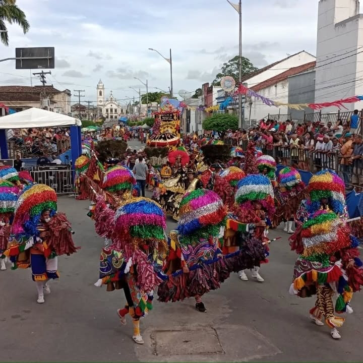
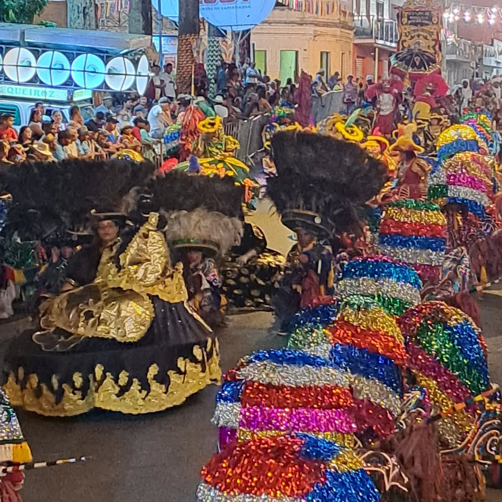
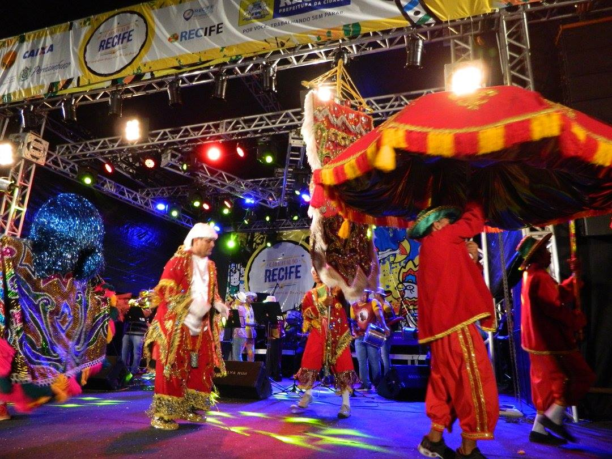
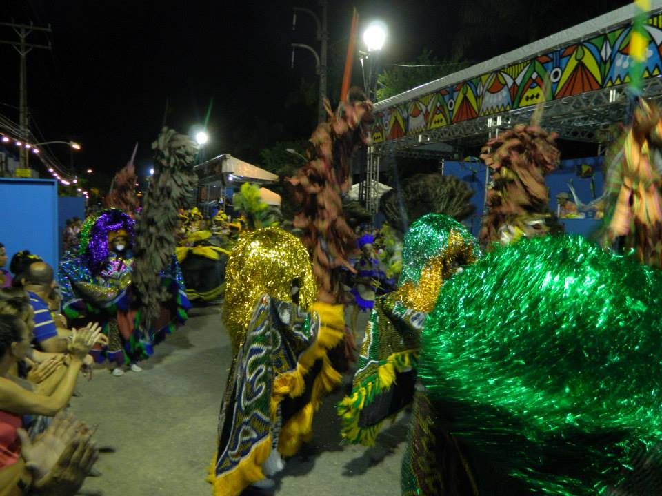

PREMIAÇõES E TÍTULOS
Título de Utilidade Pública de Glória do Goitá-PE, Câmara Municipal de Glória do Goitá-PE, Lei nº 1.464 de 25 de setembro de 2024.

na categoria “Maracatu de Baque Solto”. Concurso de Agremiações do Carnaval do Recife 2024. Realização: Prefeitura do Recife.
Patrimônio Cultural Imaterial de Glória do Goitá-PE, Câmara Municipal de Glória do Goitá-PE, Lei nº 1.410 de 26 de setembro de 2023.
3º lugar do Grupo 1, na categoria “Maracatu de Baque Solto”. Concurso de Agremiações do Carnaval do Recife 2023. Realização: Prefeitura do Recife.
1º lugar do Grupo 1
na categoria “Maracatu de Baque Solto”. Concurso de Agremiações do Carnaval do Recife 2017. Realização: Prefeitura do Recife.
1º lugar do Grupo 1
1º lugar do Grupo 1, na categoria “Maracatu de Baque Solto”. Concurso de Agremiações do Carnaval do Recife 2014. Realização: Prefeitura do Recife.

1º lugar do Grupo 1, na categoria “Maracatu de Baque Solto”. Concurso de Agremiações do Carnaval do Recife 2011. Realização: Prefeitura do Recife.
Vencedor do Prêmio Culturas Populares 2008 Humberto de Maracanã. MINC - Ministério da Cultura/Governo Federal.
Últimas Apresentações

2024
- 13 de fevereiro – Paço Marco Zero, Prefeitura do Recife
- 18 de fevereiro – Polo Rua da Moeda, Prefeitura do Recife
- 12 de fevereiro – Aliança – PE, FUNDARPE
2023
- 19 de fevereiro de 2023, POLO CULTURAL - GLÓRIA DO GOITÁ/PE, FUNDARPE/Governo do Estado de Pernambuco.
- 21 de fevereiro de 2023, Polo Praça do Arsenal, Prefeitura do Recife.
- 21 de fevereiro de 2023, Polo Marco Zero, Prefeitura do Recife.
2022
- 16 de Novembro de 2022, Sambada no Parque Dona Lindu, Prefeitura do Recife
- 16 de Setembro de 2022, 45º ANIVERSARIO DO PIABA DE OURO 2022, EM OLINDA/PE, FUNDARPE
- 31 de Julho de 2022, 30º Festival de Inverno de Garanhuns, FUNDARPE
- 12 de Janeiro de 2022, Convenção de vendas 2022 KINGSPAN-ISOESTE
2020
- 25 de Fevereiro de 2020, Polo Praça do Arsenal / DESFILE DE AGREMIAÇÃO / Prefeitura do Recife.
- 24 de Fevereiro de 2020, 16º CARNAVAL MESCLADO DA CASA DA RABECA DO BRASIL 2020, FUNDARPE / Governo do Estado de Pernambuco, Local: CASA DA RABECA -CIDADE TABAJARA - OLINDA/PE.
- 23 de Fevereiro de 2020, Polo Marco Zero / ENCONTRO DE MARACATUS DE BAQUE SOLTO, Prefeitura do Recife.
- 23 de Fevereiro de 2020, POLO CULTURAL - GLÓRIA DO GOITÁ/PE, EMPETUR / Governo do Estado de Pernambuco.
- 22 de Fevereiro de 2020, JOÃO ALFREDO, FUNDARPE / Governo do Estado de Pernambuco.
2019
- 02 de Março de 2019, JOÃO ALFREDO, FUNDARPE / Governo do Estado de Pernambuco.
- 03 de Março 2019, Polo Marco Zero / ENCONTRO DE MARACATUS DE BAQUE SOLTO, Prefeitura do Recife.
- 03 de Março 2019, POLO CULTURAL - GLÓRIA DO GOITÁ/PE, FUNDARPE / Governo do Estado de Pernambuco.
- 04 de Março de 2019, Polo Parque da Macaxeira / PROGRAMAÇÃO DE CHÃO, Prefeitura do Recife.
- 04 de Março de 2019, 15º CARNAVAL MESCLADO DA CASA DA RABECA DO BRASIL 2019, FUNDARPE / Governo do Estado de Pernambuco.
- Local: CASA DA RABECA -CIDADE TABAJARA - OLINDA/PE.
- 26 de Fevereiro de 2019, Polo Praça do Arsenal / DESFILE DE AGREMIAÇÃO / ORQUESTRA ITINERANTE E PASSISTAS, Prefeitura do Recife.
2018
- 12 de Fevereiro de 2018 - Polo Casa da Rabeca, Olinda-PE, FUNDARPE / Governo do Estado de Pernambuco.
- 12 de Fevereiro de 2018 - Parque da Macaxeira / PROGRAMAÇÃO DE CHÃO, Prefeitura do Recife.
- 11 de Fevereiro de 2018 – Polo Marco Zero / ENCONTRO DE MARACATUS DE BAQUE SOLTO, Prefeitura do Recife.
- 11 de Fevereiro de 2018 - Polo Glória do Goitá, FUNDARPE / Governo do Estado de Pernambuco.
- 07 de Fevereiro de 2018 – Polo Bezerros-PE, FUNDARPE / Governo do Estado de Pernambuco.
- 22 de Janeiro de 2018 – Polo Pátio de São Pedro / CONCURSO DE PORTA ESTANDARTE, Prefeitura do Recife.
2017
- 25 de Fevereiro de 2017 – Polo Praça do Arsenal. Prefeitura do Recife.
- 26 de Fevereiro de 2017 - Polo Glória do Goitá, FUNDARPE / Governo do Estado de Pernambuco.
- 26 de Fevereiro de 2017 - Polo Catende, FUNDARPE / Governo do Estado de Pernambuco.
- 27 de Fevereiro de 2017 - Polo Casa da Rabeca, FUNDARPE / Governo do Estado de Pernambuco.
- 27 de Fevereiro de 2017 - Concurso de Agremiações do Carnaval do Recife 2017, Grupo Especial, categoria “Maracatu Baque Solto”. Realização: Prefeitura do Recife.
- 27 de Fevereiro de 2017 – Participação no 27º Encontro Estadual dos Maracatus de Baque Solto de Pernambuco – Aliança.
2016
- 24 a 26 de novembro de 2016, X Encontro Mestres do Mundo, Limoeiro do Norte – CE. Realização: Governo do Estado do Ceará / Prefeitura de Limoeiro do Norte – CE.
- 09 de Fevereiro 2016 - Concurso de Agremiações do Carnaval do Recife 2016, Grupo Especial, categoria “Maracatu Baque Solto”. Realização: Prefeitura do Recife.
- 08 de Fevereiro 2016 – Polo Campo Grande, Prefeitura do Recife.
- 08 de Fevereiro 2016 – Participação no 11º Carnaval Mesclado da Casa da Rabeca.
- 20 de Janeiro de 2016 – Polo Pátio de São Pedro, Prefeitura do Recife.
2015
- 27 e 28 de Novembro de 2015 – 10º Festival Brasília de Cultura Popular.
- 15 de Fevereiro de 2015 - Participação no ENCONTRO DE MARACATUS DE BAQUE SOLTO – RAMPA, Polo da Prefeitura do Recife Carnaval 2015 (Polo Marco Zero).
- 15 de Fevereiro de 2015 – Polo Goiana, pela FUNDARPE/Governo do Estado de Pernambuco.
- 16 de Fevereiro 2015 – Participação no 10º Carnaval Mesclado da Casa da Rabeca.
- 15 de Fevereiro de 2015 – Polo Porto de Galinhas, pela FUNDARPE/Governo do Estado de Pernambuco..
2014
- 24º Festival de Inverno de Garanhuns – FIG 2014. Realização: FUNDARPE, Palco Cultura Popular, dia 19/07/14.
- Concurso de Agremiações do Carnaval do Recife 2014, 1º lugar do Grupo 1, na categoria “Maracatu Baque Solto”. Realização: Prefeitura do Recife.
- 03 de Março de 2014 – Participação no 10º Carnaval Mesclado da Casa da Rabeca.
- 03 de Março de 2014 – Participação no 24º Encontro Estadual dos Maracatus de Baque Solto de Pernambuco.
- 02 de Março de 2014 - Participação no Polo da Prefeitura do Recife Carnaval 2014 (Polo Marco Zero).
- 28 de Fevereiro de 2014 participação na semana pré-carnavalesca do Governo do Estado de Pernambuco, polo Águas Belas. Realização FUNDARPE.
2013
- 25 de Julho de 2013 - Sambada no Teatro Hermilo Borba Filho, participação na programação da Semana Hermilo.
- 22 de Maio de 2013 - Inauguração da Arena Pernambuco, jogo entre Sporting Lisboa e Náutico.
- 12 de Fevereiro de 2013 - Participação nos Polos da Prefeitura do Recife Carnaval 2013 (Polo Três Carneiro).
- 10 de Fevereiro de 2013 - Participação nos Polos da Prefeitura do Recife Carnaval 2013 (Polo Marco Zero).
2012
- 26 de Maio de 2012 - Celebração Pentecostes – Igreja Católica/ Governo Municipal de Glória do Goitá/ FUNDARPE.
- 18 de Fevereiro de 2012 - Participação – Semana pré-carnavalesca no Polo do Governo do Estado de Pernambuco na cidade de Ipojuca – Realização FUNDARPE.
2011
- 20 de Julho de 2011 - Participação no FIG (Festival de Inverno de Garanhuns) Realização FUNDARPE.
- 11 de Junho de 2011 – Celebração Pentecostes – Igreja Católica/ Governo Municipal de Glória do Goitá/ FUNDARPE.
- Participação nos Polos do Governo do Estado de Pernambuco nas cidades de Recife e Olinda Carnaval 2011.
- Participação – Semana pré-carnavalesca no Polo do Governo do Estado de Pernambuco – / Realização FUNDARPE e Prefeitura do Recife 2011.
2010
- Participação – Semana pré-carnavalesca no Polo do Governo do Governo do Estado de Pernambuco - / Polo Triunfo/ Realização FUNDARPE 2010.
- 12 de Agosto de 2010 – Exibição do Programa BRASILEIROS – ACREDITAR/Rede Globo.
- 23 de maio de 2010 – Celebração Pentecostes – Igreja Católica/ Governo Municipal de Glória do Goitá (Veiculado pela Rede Globo Nordeste).
2009
- 09 de julho de 2009 – Emancipação Política de Glória do Goitá – Governo Municipal de Glória do Goitá.
- 31 de maio de 2009 – Celebração Pentecostes – Igreja Católica/ Governo Municipal de Glória do Goitá.
2008
- 18 de Agosto de 2008 – Circuito do Frio Garanhuns/Realização FUNDARPE.
- 01 de Maio de 2008 – Festa da Lavadeira Realização FUNDARPE.
- 19 de Fevereiro de 2008 – Semana pré-carnavalesca no Polo do Governo do Estado de Pernambuco – Belém de São Francisco/ Realização FUNDARPE.
- 04 de Fevereiro – Guadalupe Realização FUNDARPE.